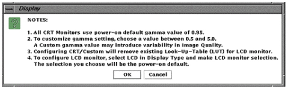

Illustration 3: MONITOR CHOICES

Click on the “Display Type” Field
Drag your mouse over LCD.
A Popup Display message will appear. Select [OK] (See Illustration 2).
The Field should change to [LCD].
Select [LCD] again. The menu shown in Illustration 3 will appear:
Scroll to the correct Display option (1850X) and release the mouse button. The display selected will appear in the box to the right.
Click on the [Configure Button] on the Install GUI to save the changes. You may see a slight change in the screen intensity when “Configure” is complete.
A Popup message box will appear, Select [OK].
Select [File] and [Quit] and [OK] from the Install/Reconfigure GUI Window.
Reboot the System. A reboot is required to activate the changes. This completes the Gamma Calibration process.
Proceed to Section 6- LCD Auto Adjustment and OSMTM On Screen Manager Operations.
Illustration 2: MESSAGE BOX

Illustration 3: MONITOR CHOICES